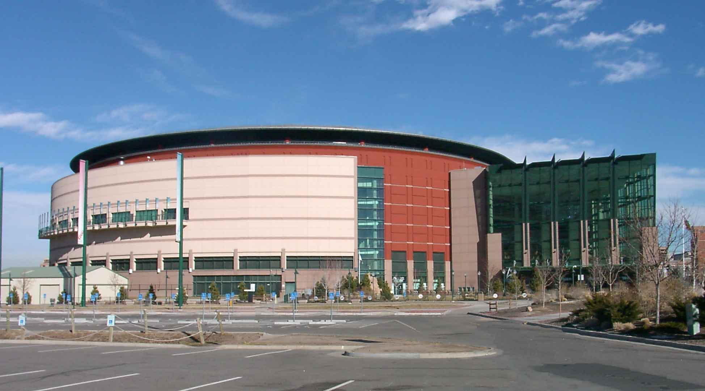

Pepsi Arena
 Pepsi Center är en inomhusarena i Denver i Colorado i USA. Arenan är uppkallad efter sin huvudsponsor PepsiCo och är hemmaarena för Denver Nuggets (NBA) och Colorado Avalanche (NHL). Arenan kan ta cirka 20 000 besökare. Pepsi Center började byggas den 20 november 1997. Den färdiga arenan invigdes den 1 oktober 1999 med en utsåld Celine Dion-konsert